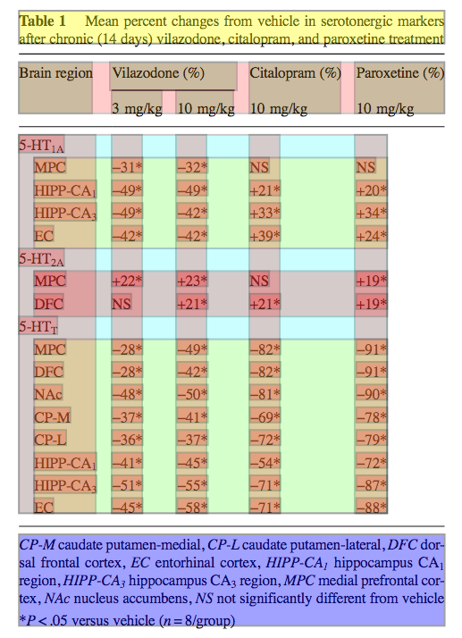

Tables in PDF documents are located (retrieved) and the contents are semantically extracted into valid XHTML tables.
These tables can transformed into Tidy Data which is then searchable using XPath and SPARQL. The workflow uses
Apache PDFBox to create a stream of characters and graphics paths in normalized page coordinates. The tables are located with
GROBID which passes coordinates to AMI to extract contents (caption, and contents). AMI futher analyses contents
into title, header, body, footer. The header and body are further extracted into "rows" and "columns". Since many "tables" are not a strict
cartesian product of rows and columns, we develop the semantics of "split-column", "subheaders", "subtables" and "split-row".
These can be normalised into HTML5 and Tidy data allowing search by semantic tools.
We developed the system against 20 journals in the biomedical sciences giving 50 articles and 170 tables. Most were created in APA-like style
(American Psychological Association) style, with multi-row split-column headers and frequent subtables and few explict table cells.
We classified tables as messy, untidy and tidy (usually single header rows and no subtables). GROBID ws used to extract table coordinates
and gave metrics of 91 TP, 20 FP, and 21 FN. AMI was tested separately by manually excising 167 true tables. These were transformed into raw SVG
files, and the contents re-assembled heuristically into high-level primitives (words, phrases, styles, superscripts) and regions (lines, boxes).
Heuristics were used to create table rows, columns and cells which were populated with HTML content.
The analysis was blinded from the developers. We used expert classification of the raw table structure into a matrix of (contents {bad, reasonable, close to perfect, perfect}). AMI was used to extract HTML5 from these with the same expert classification. Of 106 tables, 33 were perfect:perfect (33%) with 70% (reasonable:reasonable) or better.
The project is ongoing and carried out as Open Notebook Science where all data and discussion is immediately uploaded to the public web.
Introduction
Note on Strategy
This paper reports on progress in extracting semantic data from tables in PDF documents, especially in the biomedical sciences. We have written a general, heuristic approach which covers a range of tables and which we believe will perform well against the gridded tables in the ESWC2017 challenge. If this paper is accepted we will tune the tools for EWSC-like tables (mainly explicitly gridded) and submit a results paper before the Meeting.
All our work is carried out as Open Notebook Science (Bradley) where all parts of the process are visible to the world as it happens (e.g. daily or better commits). We also believe in Collaborative Science, exemplified by the Human Genome project, GalaxyZoo, and OpenSourceMalaria. We will announce this project to the world and invite collaboration, with the aim to refining the heuristics (and, where appropriate, Machine Learning).
What is a Table?
To extract tables we need a target schema, but few of these have a semantic structure.
Simple table
The simplest tables, as exemplified by the CSV (TSV) format, consist of the cartesian product of rows and columns, ideally with row and column labels.
The task is to go from the left side (with no semantic structure) to the right, using heuristics.
Complex table
Many scientific tables have mopre complex semantics, often iimplict and only indicated by visial clues.
Original (screen shot)
AMI-annotation

PDF Documents
PDF documents have very little structure; character streams, graphicsPaths, and bitmaps, but no support for higher primitives such as words, phrases, rectangles, etc. Table reconstruction therefore requires heuristics. Our process includes:
normalization of character stream. Unfortaunely many publishers use non-standard, undocumented, font-families. While the US-ASCII range(32-127) is normally correct, higher code points, especially maths, are frequently totally corrupted. Other problems include diacritics, ligatures, small caps, etc. TeX-based fonts and Mathematical PI can suffer from this. Many publishers (typesetters) have arcane fonts ("Adv"). AMI has conversion tables for the commonest.
Sub and superscripts (figure 1)
Results
Retrieved structure of tables
bad
reasonable
almost perfect
perfect
bad
xx
xx
xx
xx
reasonable
xx
xx
xx
xx
perfect
xx
xx
xx
xx
almost perfect
xx
xx
xx
xx
Acknowledgements
We would like to thank all the people who participated to our (intensive and stressing)
evaluation.
References
Peroni, S., Shotton, D. (2012). FaBiO and CiTO: ontologies for describing bibliographic
resources and citations. In Journal of Web Semantics, 17 (December 2012): 33-43. DOI:
10.1016/j.websem.2012.08.001